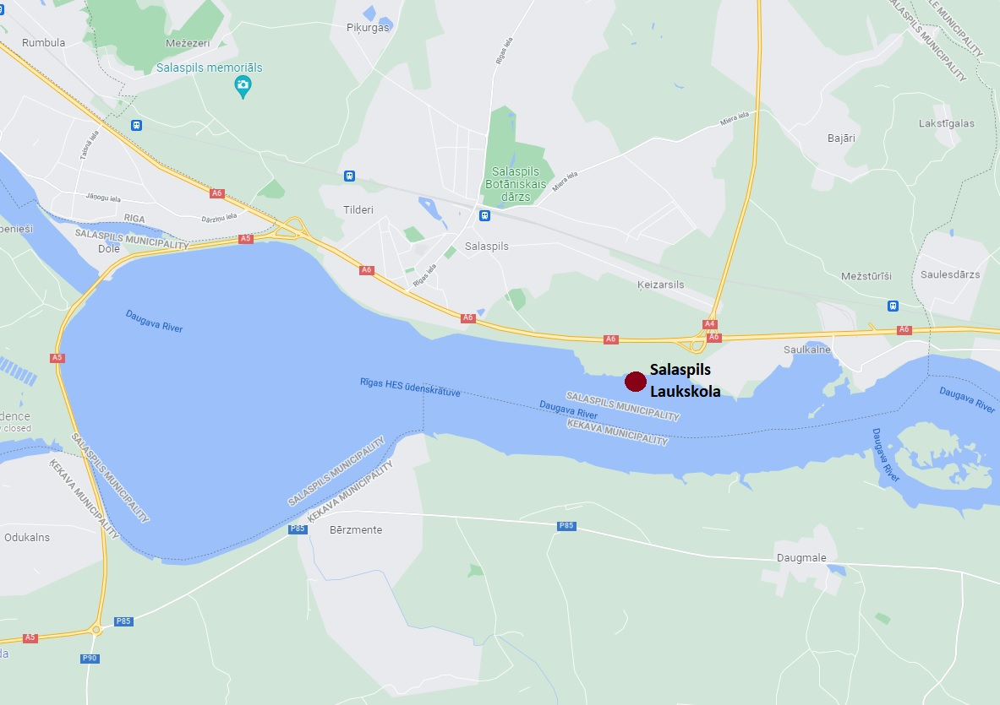

What is it?
 Salaspils Laukskola is an archaeological complex that is made up of multiple archaeologicaly significat sites. It is located about 25 km away from Riga - the capital of Latvia, near a smaller town called Salaspils. Today almost all of the sites in the complex are underwater due to the construction of the "Riga HES" (Hydroelectric power plant) during the end of 60-ties and 70-ties. In fact, because of this construction and expected flooding of surrounding areas the former soviet government of LPSR (soviet republic of Latvia) allocated significant funds to archaeologists so that they could conduct protective excavations. As a result one of the largest excavations in 20th century Latvia were held in surrounding region that led to significant discoveries, including at this Salaspils Laukskolas complex.
Excavations
The site of Salaspils Laukskola was already known from older archaeological expedition, which was led by V. Ģinters in 1936. and 1937. During this expedition 24 burials were uncovered, most of them (16) buried in individual mounds, however the local topography indicated, that there could be many more. Based on excavated finds and artifacts they were able to determine that gravesite was used by ancient Livs, one of the tribes that populated lower Daugava during late iron age (10th - 13th century CE) meaning that these were the people who met the first german crusaders that arrived to this region at the end of 12th century. In 1967. When the Riga HES construction began, a new expedition to Laukskola gravesite was formed, led by archaeologist A. Zariņa. The excavations were held in 10 ha areal for the next 8 years (until 1975.), in the end an additional 586 burials were uncovered. There were several more important discoveries. First of all to the east and west of the extensive ancient burial site, the remnants of the old settlements were found, where these people lived their lives. However, there was one discovery that was even more fascinating, unexpected and groundbreaking.
The unexpected discovery
In 1973. during the excavations in the main burial ground a deeper archaeological layer was uncovered, in which appeared to be multiple areas (6 in total) that were intensely saturated with flint pieces. The excavation of these areas was taken over by stone age expert and archaeologist I. Zagorska, since the nature of flint finds indicated a presence of much older culture. During her excavations in these areas about 2000 pieces of flint were collected, more importantly, 550 of those were determined to be actual flint tools, like arrowheads, knives and drills. But the most stunning part was the actual age of these artifacts, based on analougue finds in Poland and Lithuania, and dating data, they were as old as 9000 years BCE, meaning they were from paleolithic age. What archaeologists, A. Zariņa and I. Zagorska had actually discovered in Salaspils Laukskola was oldest known settlement site in the teritory of Latvia. Below are possible reconstructions of the howels these hunters-gatherers lived in.

In conclusion
Salaspils Laukskolas complex consists of these sites:
- Salaspils Laukskolas 10th - 13th century garvesite
- Salaspils Laukskolas 10th - 13th century eastern settlement
- Salaspils Laukskolas 10th - 13th century western settlement
- Salaspils Laukskolas Paleolithic age (11000 years old) settlement
And the Archaeologists that discovered this complex are:
- V. Ģinters
- A. Zariņa
- I. Zagorska
For those who are interested in other archaeological sites in Latvian teritory I would recommend this book